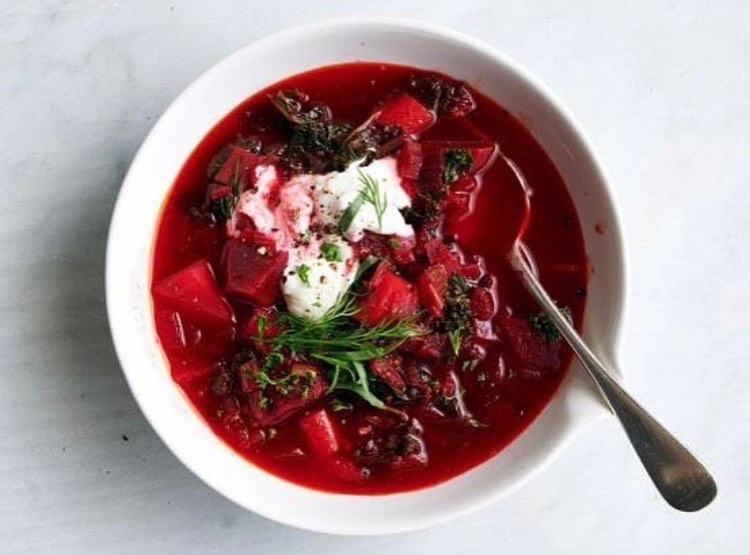

Boršč podľa @aelita1110 — Normy Jedál
#soup #polevka #borsc #первое #первоеблюдо #борщ Однажды я прочитала у Татьяны Толстой фразу: «Если мне не вкусно, я просто не буду это есть. Лучше водички попью».
Действительно иногда лучше выпить воды, чем потом страдать от изжоги и несварения...
На самом деле секрет счастливой жизни с людьми всего один.
Надо просто четко уяснить себе одну вещь: если вам кажется, что кто-то ведет себя, как мудак, то это не «день такой», не «сложный этап взаимоотношений», не «проверка границ», не «попытка самоутвердиться» — это признак того, что он и есть мудак.
И все что нужно делать в такой ситуации, это не «работать над отношениями», «привлекать его охотничий инстинкт», «заинтересовывать мужчину своей личностью», «быть мягкой и понимающей», и «не показывать характер», а выбираться с этого хлипкого плота на твердую землю.
И дальше учиться слушать себя: «Вкусно ли тебе то, что ты ешь».
А если нет, то искать другие рецепты и другие продукты из которых ты сама приготовишь свое блюдо...